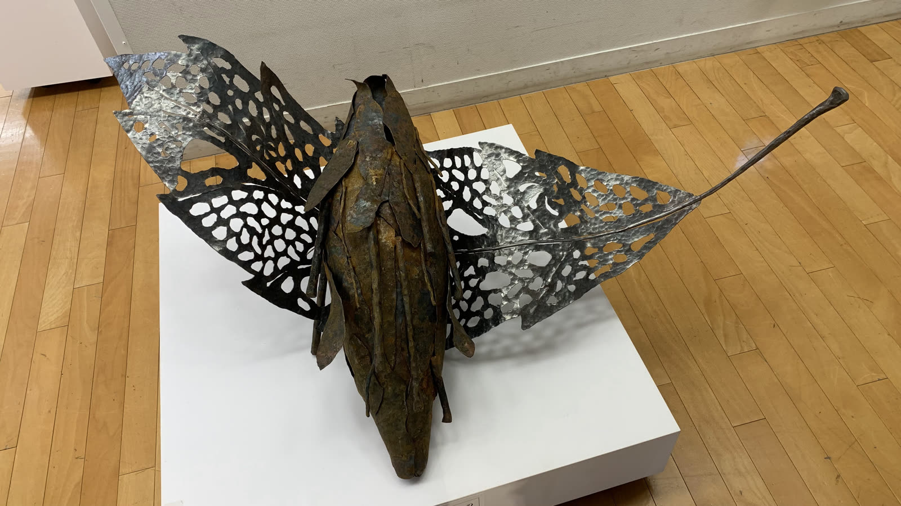
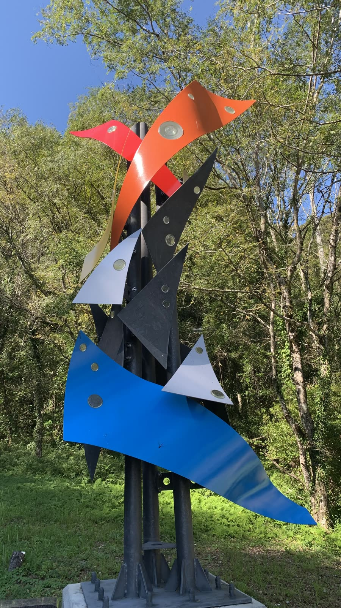
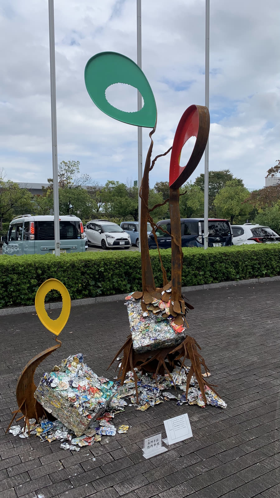

展示写真 2枚ミノムシ
ギャラリー展示錆びた鉄の胴体に、レースのように透かし彫りした羽。台座の上で、光と影の模様をつくります。
おすすめ：ショーウィンドウの主役にIKEUCHI
百貨店・路面店・商業施設のウィンドウやエントランスに、高知の職人・池内卓也が手で仕上げた鉄の彫刻を。季節やキャンペーンに合わせてレンタルします。

※ ウィンドウの演出は説明用のイメージです。実際の展示は、ウィンドウの寸法・照明・商品に合わせてご提案します。
ガラス越しでも伝わる鉄の陰影と質感が、通りを歩く人の目を引きます。
一点ものの手仕事が背景にあることで、並ぶ商品の印象まで引き締まります。
キャンペーン期間に合わせたレンタル。保管場所の心配もいりません。
キャンペーンごとに作品を入れ替えると、同じ店のウィンドウでも毎回ちがう物語が生まれます。組み合わせは一例です。
新作・新生活のウィンドウに

海と夏のキャンペーンに

秋の新作・ギフトに

年末のホリデーに
※ 掲載作品のレンタル可否・時期は作品の設置状況により異なります。
期間・料金は、作品・ウィンドウの寸法・搬入条件をうかがってお見積りします。
ウィンドウの寸法・写真と、キャンペーンの時期を。
商品とテーマに合う作品・見せ方をご提案。
施設の搬入時間に合わせて設置。
次のキャンペーンの作品へ、または返却。
寸法をうかがい、置ける作品と見せ方をご提案します。
作品と商品の距離や配置も含めてご相談ください。
人の動線を確認し、配置や固定方法を含めてご提案します。
使い方をうかがったうえでご相談ください。
NEW2026年10月撮影 ／ 作家 池内卓也
2026年10月に撮影した写真と映像です。ショーウィンドウや催事場、ポップアップの店頭に置いたときの姿を思い描いてください。

展示写真 2枚錆びた鉄の胴体に、レースのように透かし彫りした羽。台座の上で、光と影の模様をつくります。
おすすめ：ショーウィンドウの主役に 設置事例写真 4枚
設置事例写真 4枚色を重ねて塗った鉄板と、散らばる色とりどりの鉄の葉。砂利の上で、絵の具が飛び散ったような明るさを放ちます。ワイナリーの庭に設置されています。
おすすめ：ポップアップの店頭に
設置作品写真 3枚赤・黄・青・白の鉄の羽が、黒い鉄の柱に沿って空へ舞い上がる。美術館の入口で来館者を迎えるモニュメントです。
おすすめ：商業施設の吹き抜け・広場に
屋外展示写真 2枚つぶれた缶の山から、緑・赤・黄の鉄の芽が伸びあがる。タイトルのとおり“芽吹き”を感じさせる作品です。
おすすめ：催事場・屋外広場に 設置事例写真 3枚
設置事例写真 3枚細い鉄の帯を幾重にも編んだ大きな球に、身を乗り出すような人の姿。見る角度で表情が変わります。ワイナリーの高台の庭に設置されています。
おすすめ：エントランスの目印に 実物写真 8枚
実物写真 8枚鉄の葉、銀色の花、鎖の脚のテーブル、蝶のとまるランプ、小さな動物たち。庭の緑の中に点々と置ける、小ぶりな作品です。
おすすめ：ナチュラル系ショップの店内に※ ページ上で流れる短い映像は音声なしです。「全編を見る」「映像を見る」はYouTubeで再生します。「作品名確認中」の作品名は仮のものです。掲載作品のレンタル可否・時期は作品の設置状況により異なります。門扉はレンタルではなくオーダー制作のご紹介です。
ウィンドウの写真と寸法を添えて、お気軽にお問い合わせください。
有限会社アイエル物産 ／ 高知県香南市野市町土居1073-2 ／ FAX 0887-54-0712